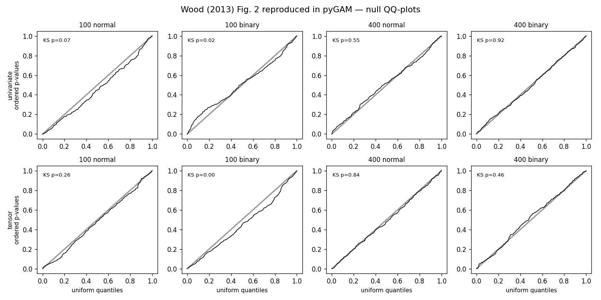
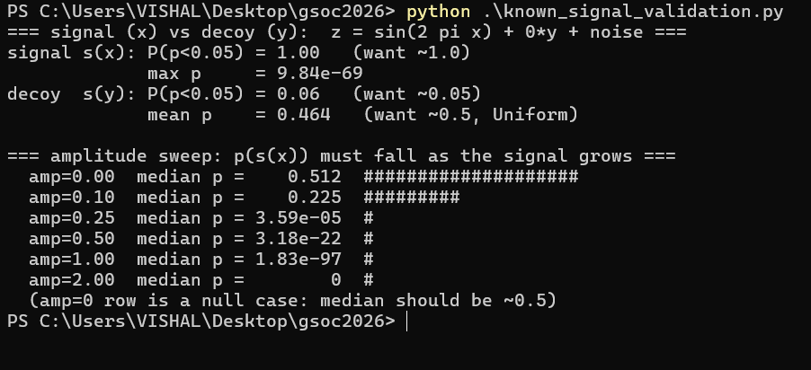

Part one - the work
First, what is a GAM?
A Generalized Additive Model is a regression that doesn't force every relationship to be a straight line. Instead of one slope per feature, it fits a flexible curve for each, and lets the data choose the shape. Each curve is a weighted sum of simple building-block functions,
and the model adds those curves together through a link function $g$:
The coefficients are fit by penalised iteratively-reweighted least squares. The penalty $S$ is the knob that stops the curves from overfitting:
To ask whether a term actually matters, i.e. the hypothesis $H_0: \beta_j = 0$, you form a Wald-type statistic. In words: how big is the fitted term, measured against its own uncertainty?
pyGAM turned that number into a p-value with $P(\chi^2_{\text{rank}} > T_r)$. But Wood (2013b) shows the right yardstick isn't a plain $\chi^2$. It is a weighted mixture of chi-squareds:
where $e_1, e_2$ are the two extreme eigenvalues of the influence matrix $F = X(X^\top W X + S)^{-1}X^\top W$. Using the plain $\chi^2(\text{rank})$ makes the p-values too small, which shows up as false positives.
And the issue
pyGAM is the most widely used library for building GAMs in Python. It is relied on well beyond machine-learning circles, which is exactly why its p-values matter:
"The library is in need of more reliable p-values. We receive many citations from academics in social and earth sciences, and hypothesis testing is clearly important to them. The current calculation uses an outdated approximation from Wood 2006 that rejects the null hypothesis too eagerly. Luckily Wood 2014 contains improved p-value calculations which are the standard in mgcv."
the pyGAM project idea
Expected outcomes
- Read and understand the reference text to grasp the improved p-value calculation.
- Implement the modernised statistics in
GAM._compute_p_values(). - Write unit tests that compare against the references (e.g. Wood 2014) on simple datasets.
What I did
Five concrete issues, and the fixes
Effective degrees of freedom
A penalised curve isn't as free as its coefficient count implies. You have to measure that partial freedom correctly, as $\text{tr}(2F_j - F_j^2)$ rather than $\text{tr}(F_j)$, and then actually use it. Earlier attempts rounded it off or ignored it.
Pseudoinverse truncation
Some directions of the curve are so damped by the penalty they carry no real information. Dividing by their near-zero variance explodes the score into fake significance, so I drop those directions before inverting.
Reference distribution
A fractional-freedom curve doesn't follow a textbook chi-squared, but a blended one. I score against that blend with the fast, accurate Liu-Tang-Zhang (2009) approximation.
QR-based inversion
Instead of inverting a huge, shaky covariance matrix, a QR trick rewrites the score on the curve itself, using a tiny matrix that is quick to compute and numerically stable.
Unknown-scale families
When the noise level is itself estimated (as with Gaussian models), that guess adds uncertainty. I fold it in by integrating over it, instead of a shortcut that pretends the scale is known.
The trail
Every commit, over the summer
The first helpers, the core statistic, the hard-won QR correction, the clean-room rewrite, then layer after layer of validation.

Part two - the deep dive
How each piece actually works
The five fixes, in order, with the intuition first and the maths right after.
1 · Effective degrees of freedom
Give a curve a wiggliness budget. With no penalty it can spend a whole unit of freedom on every coefficient; the penalty makes it spend only part of each. The total actually spent is the effective degrees of freedom, and it is usually a fraction like 3.7, not a round 4.
You read that spending off the influence matrix $F = X(X^\top W X + S)^{-1}X^\top W$, whose eigenvalues sit between 0 (fully penalised away) and 1 (fully free). The correct total is not $\text{tr}(F)$ but
Call this number $\tau$. It sets how many chi-squared terms the yardstick should have, so getting it right, and feeding it into the test rather than rounding it away, is what everything else depends on.
2 · Pseudoinverse truncation
The score divides the curve by its uncertainty. But in some directions the penalty has crushed the curve so hard that its uncertainty is essentially zero. Dividing by that is like dividing by nothing: the score shoots up and reports significance that isn't there.
Intuition: if the data barely constrains a direction, it shouldn't get a vote. So I set a small threshold and throw out every direction below it before inverting. Only the directions the data really pins down are kept.
3 · The reference distribution
Here is why a plain chi-squared is wrong. A $\chi^2$ with $k$ degrees of freedom is the distribution of $k$ whole, independent squared normals added up. But a fractional $\tau = 3.7$ means you have three-and-a-bit of them, not four. You can't have 0.7 of a squared normal in an ordinary chi-squared.
So the true yardstick is a mixture: a few full-weight $\chi^2_1$ terms for the whole directions, plus two partly-weighted ones for the fractional boundary. That mixture has no formula for its tail, so I approximate it with Liu-Tang-Zhang (_liu2), which matches its first four moments to a single stretched chi-squared. There is an exact route (Davies), but it is slower and, across all my checks, agrees with Liu to a hair, so I leave it aside.
4 · QR-based computation of the statistic
This is the core, and the subtlest part. Done naively, the score needs the inverse of a giant, badly-behaved matrix. Wood's trick is to notice the score really lives on the fitted curve, not on the raw coefficients, and a QR decomposition lets you compute it on a tiny matrix instead. Here it is, one plain step at a time.
Step 1. Start from the definition: the size of the curve $\hat f_j = X_j\hat\beta_j$, measured against its own (rank-$\tau$) uncertainty.
The curve's uncertainty lives in a huge $n\times n$ matrix. The next step is just a change of coordinates that shrinks it, without changing the answer, like weighing something on a smaller, better-calibrated scale.
Step 2. Write the term's design matrix as $X_j = QR$ with $Q$ orthonormal. Then $\hat f_j = Q(R\hat\beta_j)$ and the uncertainty factors as $V_f = Q\,W\,Q^\top$ with $W = R\,V_\beta\,R^\top$. Because $Q^\top Q = I$, the $Q$'s cancel and the whole thing collapses to the small $q\times q$ matrix $W$:
No giant inverse is ever formed, and $W$ has the very same nonzero eigenvalues as the huge matrix, a fact I verify directly in the tests.
Step 3. Find the natural axes of $W$ (its eigen-directions) and see how far the curve reaches along each:
Step 4. Rescale each axis by its own uncertainty, so a value of 2 means two standard deviations and the axes become comparable:
Step 5. Add up the squared, rescaled reaches. The whole directions ($\delta_1$) count fully; the single fractional pair ($\delta_2$) gets a partial weight $\tilde B$:
where $\nu$ is the fractional part of $\tau$. In one line: measure how big the curve is in units of its own uncertainty, but only count the fractional freedom it truly has.
5 · Unknown-scale families
For Gaussian-type models you also have to estimate the noise level, and that estimate is itself uncertain, like measuring with a ruler whose length you only know approximately. pyGAM used to paper over this with an F-shortcut. Instead I integrate the mixture tail over the scale's uncertainty by quadrature (_liu2_scaled_quadrature). When the scale is known the p-value comes from _liu2; when it is estimated, from the quadrature version, which carries that extra uncertainty and returns slightly larger, honest p-values.
The call flow
How a p-value is produced
The proof
How I know it works
I wrote test_pvalues.py from scratch, 88 tests, from cheap unit checks up to real-data validation.
Agreement with mgcv
The strongest check: feed the same inputs to my statistic and to compiled mgcv's testStat. Across 13 cases (fractional and integer df, known and estimated scale, spline, factor, and tensor terms) the statistic matches to about nine decimal places.
Null calibration
Fit a smooth on pure noise hundreds of times. An honest p-value must then be uniform on [0,1], so on a QQ-plot the points land on the diagonal. This reproduces Wood's Figure 2 directly, and it is the clearest single picture that the old false-positive bug is gone.

Power, tensors and real data
Calibration proves the method stays quiet on noise; power tests prove it is loud on real effects, firing every time, ignoring decoy features, and weakening smoothly as the signal fades. Multidimensional te() terms are checked the same ways and matched to mgcv on a real fit. Finally, the ISLR wage dataset recovers the textbook answers, with age strongly nonlinear, education strong, and year weak but real, exercising the categorical factor path end to end.

By the numbers
The work, measured
Core files: pygam/pygam.py (the five fixes) and pygam/tests/test_pvalues.py (737 lines, written from scratch), plus standalone validation scripts. Exact additions and deletions are on the PR's Files changed tab.
Links and references
Everything in one place
- Pull request #586, the contribution
- Issue #163, the original bug report
- GSoC 2026 project page (GC.OS)
- My working branch, vsl366/pyGAM · gsoc-vsl366
- pyGAM · documentation
- Wood, S. N. (2013). On p-values for smooth components of an extended generalized additive model. Biometrika 100(1), 221-228. doi:10.1093/biomet/ass048
- Liu, Tang and Zhang (2009). A new chi-square approximation to the distribution of non-negative definite quadratic forms. Comput. Stat. Data Anal. 53(4), 853-856.
- Wood, S. N. (2017). Generalized Additive Models: An Introduction with R (2nd ed.), the basis of mgcv.